Twinning DUT interface
The Twinning solution offers a DUT interface to attach a Twinning DUT daughter board.
The Twinning family board docks on the DUT interface of the compact test head (CTH). The Twinning solution offers a DUT interface to have a Twinning DUT daughter board docked onto it.
Overview
Ever increasing complexity and performance of DUTs result in the demand for expanding the test system resources. This requirement impacts the DUT board as well. To enhance the capabilities of the V93000 ATE in the DUT board area, Advantest has designed the Twinning solution.
The Twinning solution is an extension of the V93000 DUT interface that provides additional DUT board area by a piggyback configuration of a Twinning family board affixed to a metal chassis with a Twinning DUT board on top. There is not only additional DUT board area that can be used for routing and placement of components but also an internal area that can be used for large component integration or even built-off self test (BOST) circuits.
The Twinning solution basically consists of four parts shown in the figures below:
- the custom designed Twinning family board on the bottom side of the Twinning solution that can be docked onto the test head using the same mechanisms as being applied to any other V93000 DUT board
- the solid metal Twinning base frame affixed onto the Twinning family board offering the capability to soft dock (DUT dock) a DUT board, called the Twinning DUT board, on top
- up to 16 Twinning standard pogo segments embedded in the Twinning base frame to provide the galvanic coupling to the Twinning DUT board
- the easily exchangeable top-side custom designed Twinning DUT board soft docked (DUT docked) on top of the Twinning base frame
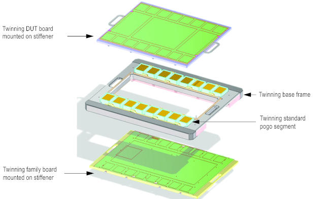
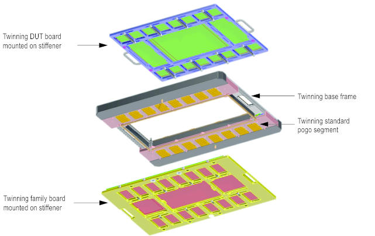
The test head upgrade kit must have been installed on the compact test head. The Twinning solution must have been correctly attached and docked to the test head, including a connection to the power supply and the test head control, and a connection to the compressed air supply.
The manipulator must have been qualified to cope with the weight of the test head, the Twinning solution, and all customer supplied units like Twinning DUT board and Twinning family board.
The Twinning DUT board and the Twinning family board must have been designed according to the DUT board design reference.
The SmarTest software is not aware of the usage of the Twinning solution, that is the SmarTest software cannot differentiate whether you use a common V93000 DUT board or the Twinning solution.
For information on diagnostics and calibration with regard to the Twinning solution refer to Twinning maintenance tasks.
Twinning is seen as a DUT board extension and requires additional calibration steps to be performed by the user of the Twinning solution. Calibration and diagnostics are at the pogo level of the test head.
The next figure shows a compact test head with a Twinning solution soft docked, with no Twinning DUT board docked but hard docking spacers installed.
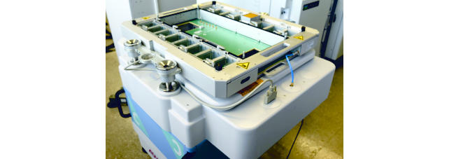
Twinning family board
The Twinning family board docks to the V93000 DUT interface like any other DUT board but has got a special stiffener and a different PCB geometry than the standard DUT board of V93000. On the Twinning family board, multiple circuits and even large components can be placed that do not fit on a standard DUT board.
The following two figures illustrate the top side and the bottom side of the Twinning family board mounted on a stiffener, respectively.
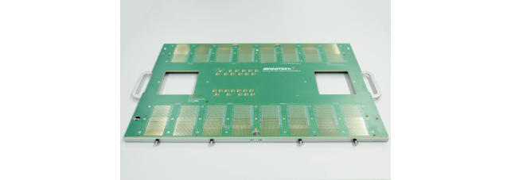
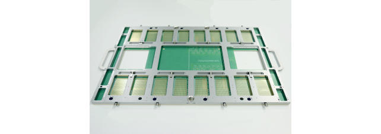
Twinning base frame
The signals from the Twinning family board are routed through a Twinning base frame that contains up to 16 Twinning standard pogo segments to the Twinning DUT board. In addition, routing can be done via Twinning high-speed pogo segments as well for high-speed digital signals.
The figure below shows the Twinning base frame with a Twinning family board affixed, no Twinning DUT board docked.
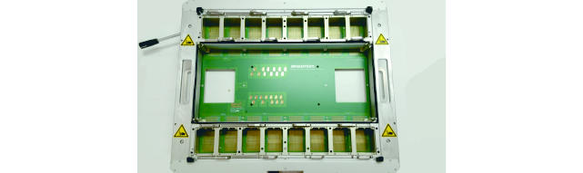
Twinning DUT board
The DUT is located on the Twinning DUT board. The Twinning DUT board has got a different PCB geometry and pogo pin locations from the standard V93000 DUT board. The Twinning DUT board has got a different stiffener than the one of the V93000 standard DUT board.
The following two figures illustrate the top side and the bottom side of the Twinning DUT board mounted on a stiffener, respectively.
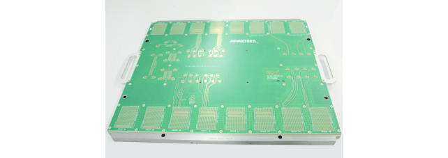
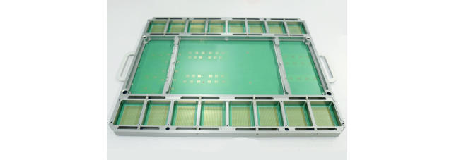
The following figures show the Twinning base frame placed on a cart without and with Twinning DUT board soft docked, respectively. There is only one Twinning standard pogo segment installed.
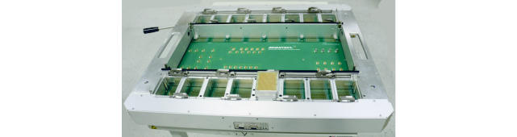
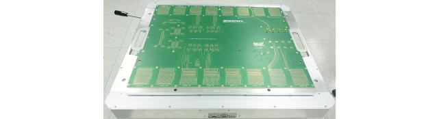
Twinning standard pogo segment
The Twinning standard pogo segment E8028PSD is to be used for standard digital pin electronics cards and for DPS channels.
The Twinning standard pogo segment supports the following card types:
- digital cards PS1600, PS1600-ME
- DPS cards DPS32, DPS128 HC, DPS128 HV, VI32, AVI64
- Wave Scale RF cards.
One Twinning standard pogo segment houses an array of 19 * 27 = 513 pogo pins as shown in the figure below. The pogo pin to pogo pin pitch is the same as on the standard V93000 pogo pins (100 mil, 2.54 mm).
The designer is free to decide how the signal/group pin assignment is done on the Twinning standard pogo segment. For instance, multiple pogo pins can be assigned to one DPS force signal to reduce the overall inductance.
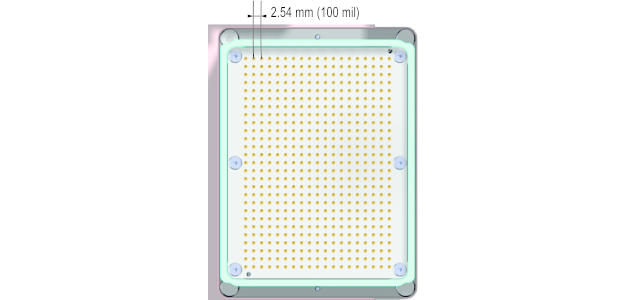
The pogo pin array is embedded in a spring-loaded protection frame as shown below.
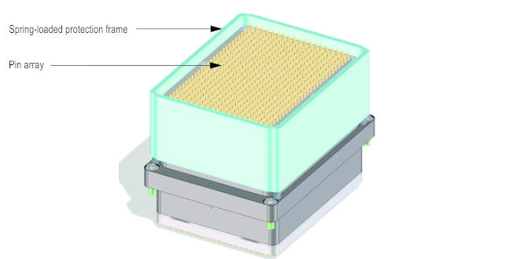
The figure below shows the individual pogo pin dimensions (compressed). The standard pogo segment frame is composed of two 4 mm thick FR4 plates, separated by 7 cm.
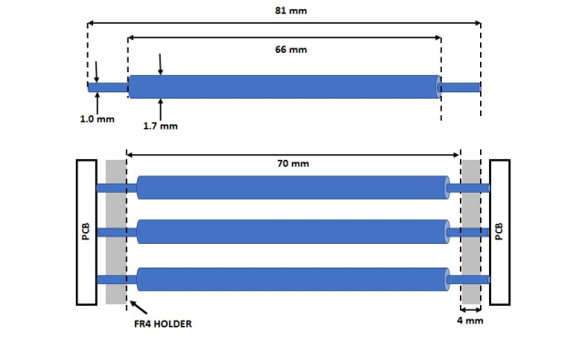
The measured pogo pin performance for a pogo segment with each signal pin surrounded by four ground pins is plotted in the figure below. The measured resonance is due to impedance discontinuity from the FR4 frame that holds the pogo pins, and the 7 cm (50 Ohm) air cavity that exists inside the pogo segment.
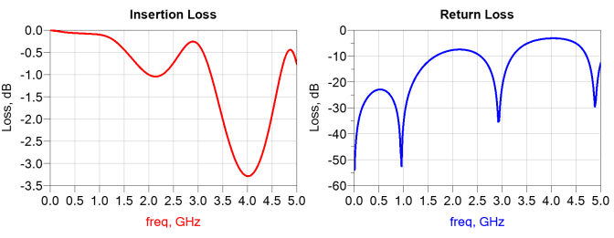
The table below shows the standard pogo segment specifications.
| Specification | Value | Notes |
|---|---|---|
| Bandwidth (-3dB) | 3 GHz | Assuming the signal pin is surrounded by four ground pins |
| NEXT/FEXT | < -20 dB (DC to 3 GHz) | Assuming the signal pin is surrounded by four ground pins |
| Maximum rated current | 4 A | |
| DC resistance | 15 mOhm | Typical |
Twinning high-speed pogo segment
For high-speed applications in the range of more than 10 Gb/s there are Twinning high-speed pogo segments available. The Twinning high-speed pogo segment provides the contact between Twinning family board and Twinning DUT board on shortest path. The figure below depicts a Twinning high-speed pogo segment with its 17 high-speed pogo pins, each of them representing one channel.
The Twinning high-speed pogo segment supports the following card types:
- digital card PS9G
- digital card PSSL.
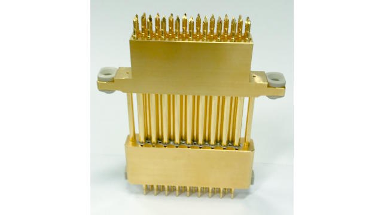
Each of the 17 signal pins is surrounded by four ground pins, except on the edge where only three ground pins are available. Unless the Twinning standard pogo segment with its free assignment of signal/group pins, the signal pin of the Twinning high-speed pogo segment is always surrounded by the four or three ground pins to maintain signal integrity.
The Twinning high-speed pogo segment is hold by a bracket that is capable to hold up to four Twinning high-speed pogo segments. The bracket is affixed to the inner side of the Twinning base frame. Up to four brackets can be attached to the Twinning base frame, up to two on the front side, and up to two on the rear side. The schematic of two brackets (purple) affixed to the Twinning base frame holding two Twinning high-speed pogo segments is depicted below.
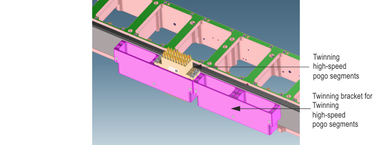
The figure below shows the measured pogo pin performance on the high-speed pogo segment, while the table shows the high-speed pogo segment specifications.
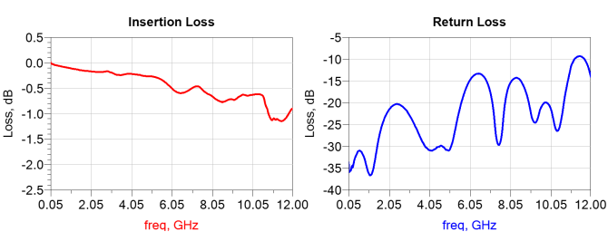
| Specification | Value | Notes |
|---|---|---|
| Bandwidth (-3dB) | 12 GHz | |
| DC resistance | 20 mOhm | Typical |
Twinning and Wave Scale RF
An RF space transformer is a mediating device (interposer) connecting an RFIM-6/RFIM-8 of the test head's DUT interface with an RF bracket at the bottom side of the Twinning DUT board. The RF space transformer supports Wave Scale RF equipment only. The RF space transformer is to be affixed to the stiffener of the Twinning family board. The bottom side of the RF space transformer provides an RF bracket to terminate an RFIM-6/RFIM-8 of the test head. The top side provides an RF cable interface to connect to an RF bracket of the Twinning DUT board, as shown in the figures below.
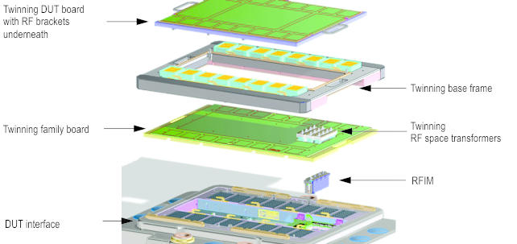
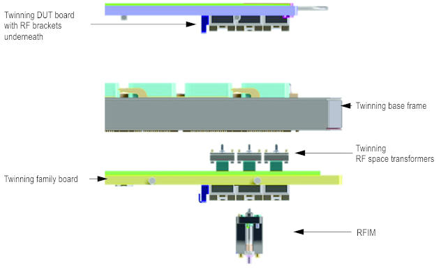
A schematic view of the RF space transformer is given below, without cables equipped.
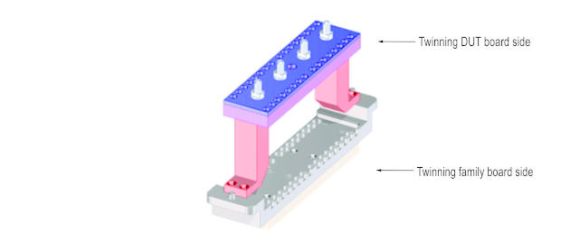
The figure below depicts the RF space transformer with 32 cables equipped.
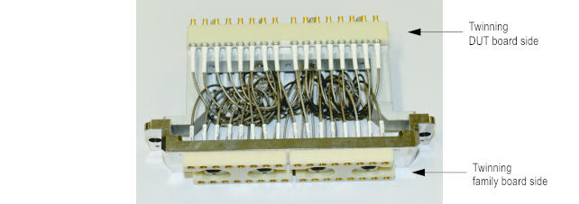
Advantages
Twinning offers you the following advantages:
- increased DUT board area to house user defined components and modules on the PCBs in a production environment
- flexibility to distribute tester resources on an enhanced realm of the DUT interface
- a z-height of about 80 mm (3.15 in) between Twinning family board and Twinning DUT board to place components on the PCBs
- flexibility to dock and to undock various Twinning DUT boards to a common Twinning family board
- full compatibility to the Enhanced DUT Scale Interface of the V93000 SOC series
- power, control, and mechanics seamlessly integrated in the V93000 ATE system
- a high level of integration of customer defined modules and external instruments into the V93000 SOC series tester environment
- capability to exchange the Twinning family board
- possibility to modify and add components for your test configuration
Functional changes
- Introduced in SmarTest 7.4.4 / 8.1.0